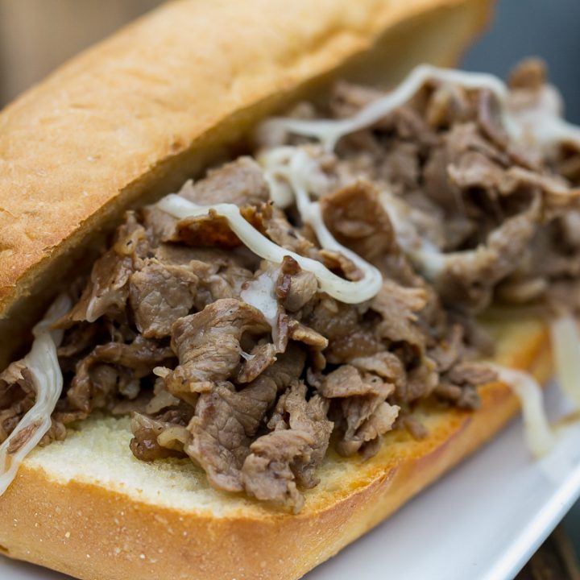

Griddle Style Philly Steak Sandwich

This sandwich is a gift. The delicious cheese combined with roast beef will have your head spinning in flavor.
Ingredients
- 1 (8 ounce) can of sliced mushrooms, drained
- 1 small onion, sliced
- 1 green bell pepper, seeded and sliced into strips
- 8 slices of provolone cheese. Note: As this level of cheesiness adds to the sodium levels, you can cut this back to 4 or even less slices of cheese.
- Salt to taste
- Seasoned salt to taste
- 1 pound of thinly sliced roast beet
- 4 submarine rolls, halved
Directions
Prep Time: 5 minutes, Cook Time: 15 minutes, Servings: 4
Step 1:
- Preheat an electric griddle or stove-top griddle over medium-high heat
- On one-half of the griddle, place the mushrooms, onion, and pepper
- On the other side, place the roast beef
- Cook and stir each group separately, chopping the beef into smaller pieces as it cooks, and seasoning with salt and seasoned salt
Step 2
- When the vegetables are tender and the beef is hot, place the slices of provolone cheese over the beef to melt
- Turn off the griddle
- Scoop the cheesy grilled beef into sandwich rolls, and top with the onions and peppers
allrecipes - Griddle Style Philly Steak